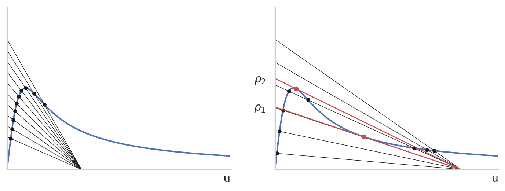

Predation is a fundamental topic in ecology and the main interaction between species. It must be understood in a broader sense: fishing, harvesting, hunting are all form of predation.
The simplest model of predation consists in formally increasing the mortality rate of \(N\) by an extra rate \(aP^*\), that is \[
N' = r(N)N - aP^* N = f(N),
\]
where \(P^*>0\) is the number of predators and \(a>0\) is the attack rate or effective killing rate. We note that the death rate \(aP^*N\) is proportional to both the number of predators \(P^*\) and the number of preys \(N\), according to the law of mass action, as suggested by Volterra with the method of encounters. The idea is similar to collision theory for ideal gases.
This type of predation is also called generalist, in the sense that predators’ survival does not depend on the survival of the prey population \(N\). If the preys go to extinction, the predator will hunt something else. A specialized predator, on the other hand, will suffer from a low level of \(N\), as we shall see next week.
The equilibria of the equation are: \(N=E_0 = 0\), as usual, and the zeros of: \[
r(N) = aP^*.
\]
If \(aP^* > r(0)\), then we have no additional equilibria, because \(r'(N)<0\).
If \(aP^* < r(0)\), then there exists a second equilibrium \(N^* > 0\).
The stability of the second equilibrium follows from \[
f'(N^*) = r'(N^*)N^* + r(N^*) - aP^* = r'(N^*)N^* - aP^* < 0,
\]
because \(r'(N)<0\). So \(N^*\) is asymptotically stable.
The stability of \(E_0\) is similar: \[
f'(E_0) = r'(0)\cdot 0 + r(0) - aP^* = r(0) - aP^* > 0,
\]
meaning that it is unstable. Concluding:
If \(aP^* > r(0)\), we have one stable equilibrium \(E_0=0\), thus the population will go to extinction. In fact, the predation level is high.
If \(aP^* > r(0)\), \(E_0=0\) is unstable but we have another equilibrium \(0<N^*<K\) asymptotically stable. Thus, the predation is sustainable.
The case \(aP^* = r(0)\) is delicate. We have a single equilibrium, \(E_0=0\), but \(f'(E_0) = 0\), so we cannot deduce the stability from the linearization (why?). By inspecting the sign of \(E_0\), we observe that \(f(N)<0\) for \(N>0\), so \(E_0\) is attractive. However, for \(N<0\) we have that \(f(N)<0\), thus it is repulsive (biologically, we do not care because \(N<0\) is irrelevant.) This type of equilibrium is called saddle-node.
The point \(aP^* = r(0)\) is a bifurcation point, specifically a transcritical bifurcation (See Section B.6). Roughly speaking, the dynamic before and after the bifurcation point is topologically different: in one case we have one equilibrium, in the other 2 equilibria. Actually, we still have 2 equilibria for \(aP^* > r(0)\), one being negative. Thus, what really happens is that as we increase \(aP^*\) the two curves of equilibria (\(N=0\) and \(N=E_0\)) crosses and swap stability.
Code
import matplotlib.pyplot as pltimport seaborn as snsimport numpy as npsns.set_theme("notebook", style="whitegrid")with plt.xkcd(scale=0.5): fig, ax = plt.subplots() sns.despine() ax.xaxis.set_ticks([]) ax.yaxis.set_ticks([]) ax.plot([0,1],[0,0],'r-') ax.plot([0,1,1.2],[1,0,0],'b-') ax.plot([1,1.2],[0,-0.2],'r-',alpha=0.5) ax.plot([1],[0],'k.',markersize=16) ax.grid(False) ax.set_xlabel('$P^*$') ax.set_ylabel('$N^*$') ax.set_xlim([0,1.2]) [N,P] = np.mgrid[0.01:1.2:30j,0.01:1.2:30j] D = N*(1-N) - P*N ax.quiver(P,N,np.zeros_like(D),D,alpha=0.5) plt.show()
Bifurcation diagram for the model with generalist predation. In blue, the stable equilibrium, in red the unstable one. Beyond the bifurcation point (transcritical, in black) there is only one equilibrium.
4.2 Holling type predation models
More generally, we define the predation as: \[
N' = r(N)N - \pi(N) P^*,
\]
where \(\pi(N)\) is called functional response. The functional response can be interpreted as follows: \(\pi(N)\Delta t\) is the number of preys killed in \(\Delta t\) units of time by a single predator.
For the simplest model, we have \(\pi(N) = aN\). However, this is not realistic, because for very large \(N\) the predation rate cannot grow undefinitely, it must reach some limiting value. For instance, a predator needs some time to consume the prey, and this time cannot be reduced below a certain limit. Similarly, it is reasonable that at low density of preys, say when \(N\) is small, predation is harder.
In general, we can assume that:
\(\pi(0)=0\), no preys no predation, and
\(\pi'(N)>0\), the more preys, the higher the predation rate.
Holling (1965) proposed the following types of functional responses:
Holling type I\[
\pi(N) = \begin{cases} aN, & 0 \le N \le N^*, \\ aN^*, & N > N^*. \end{cases}
\]
This model is exactly like the linear one, but it assumes that for \(N > N^*\) we have constant predation rate \(aN^*\). The parameter \(a\) is called attack rate, and it measures, after an encounter between prey and predator, the success rate of predation. Note that the function \(\pi(N)\) is not \(\mathcal{C}^1\) but it is Lipschitz.
Holling type II
\[
\pi(N) = \dfrac{a N}{1 + a \tau N},
\]
with \(a, \tau>0\). This is a smooth version of Holling type I. For small \(N\), \(\pi(N) \approx aN\), so the meaning of \(a\) is the same as above. For large \(N\), we have that \(\pi(N)\to 1/\tau =: \alpha\), which is called maximum killing rate. That is, \(\alpha\) is the number of preys killed by one predator in a unit of time, when the number of preys is very large. Alternatively, we can interpret \(\tau\) as the time required by the predator to consume the prey.
Holling type III\[
\pi(N) = \dfrac{\alpha N^\theta}{\nu^\theta + N^\theta},
\]
with \(\alpha,\nu>0\) and \(\theta > 1\). The last type also accounts for a lower predation rate as low density of preys. In fact, for small \(N\) and \(\theta > 1\) we have \(\pi'(0)=0\). For \(N=\nu\), \(\pi(\nu) = \frac{\alpha}{2}\), and for \(N\to\infty\) we have \(\pi(N)\to \alpha\), the maximum killing rate. Thus, \(\nu\) is the number of preys at which the killing rate is exactly half of the maximum one.
Different types of Holling predations
It is possible to justify Holling type II in a few ways. One, we will see in the completely different context of enzymatic reactions. A simpler one is as follows. In a time \(T\), a single predator will spend \(1/\pi(N)\) time in hunting. (Always keep in mind the bathtub example!) But the total time splits into \(T_s\), the time spent seeking for a prey, and \(\tau\), the time needed to consume a prey. The time \(\tau\) is fixed, no matter how large is \(N\). The time \(T_s\), however, is exactly \((a N)^{-1}\), because the more preys the easier is to catch them. Putting all together we have: \[
\frac{1}{\pi(N)} = T = \tau + T_s = \tau + \frac{1}{a N},\quad\Rightarrow\quad \pi(N) = \frac{a N}{1+a\tau N}.
\]
4.3 Spruce budworm model
The effect of the spruce budworm on a forest.
The spruce budworm is an insect that feeds on needles of balsam fir trees (see this website). If needles are removed, the tree dies. Historical data in Canada evergreen forests, where the budworm is present, shows that in most years the budworm density is very low. However, in a outbreak year, the budworm population spikes and can kill up to 80% of mature trees in the forest. The period of the outbreak is roughly 30-70 years.
The spruce budworm model has been introduced in Ludwig et al. (1978). They proposed a system of 3 variables:
\(N(t)\), the budworm density,
\(S(t)\), the habitat space for larvae, and
\(E(t)\), a measure of food energy reserves available to the budworm.
We focus here on the equation for \(N(t)\). In fact, \(S(t)\) and \(E(t)\) will vary very slowly compared to \(N(t)\), thus they can be assumed constant. (This argument can be made rigorous, as we shall see for enzymatic reactions.)
The equation for \(N(t)\) reads as follows: \[
N' = rN\Bigl(1-\frac{N}{K}\Bigr) - \frac{\alpha P^* N^2}{\nu^2 + N^2}.
\]
The first term is the logistic growth. The second one is the predation of the budworms due to birds. This is Holling type III. Note that the parameters are fixed numbers (they do not depend on time), but they will depend on \(S\) and \(E\), somehow. Thus, it will be interesting to see what happens to the system as we change them.
Since we have too many parameters, we proceed with non-dimensionalization. Here we select: \[
\tau = \frac{t}{T}, \quad u = \frac{N}{\nu},
\]
for some \(T > 0\) to be selected. We have: \[
\frac{\nu}{T} \dot{u} = r \nu u \Bigl(1 - \frac{\nu u}{K} \Bigr) - \frac{\alpha P^* u^2}{1 + u^2},
\]
thus by selecting \[
T = \frac{\nu}{\alpha P^*}, \quad \rho = \frac{r\nu}{\alpha P^*}, \quad q = \frac{K}{\nu}
\]
we arrive at \[
\dot{u} = \rho u \Bigl(1 - \frac{u}{q} \Bigr) - \frac{u^2}{1 + u^2},
\]
where we are left with only 2 parameters:
\(\rho\) is proportional to the intrinsic growth rate, while
\(q\) is the carrying capacity normalized to the half-saturation population \(\nu\).
4.3.1 Equilibria and stability
As usual, we start by looking for equilibria of the system, that is solutions of \[
\rho u \Bigl(1 - \frac{u}{q} \Bigr) - \frac{u^2}{1 + u^2} = 0.
\]
We have that \(u=0\) is an equilibrium. The others solve the equation \[
\rho \Bigl(1 - \frac{u}{q} \Bigr) - \frac{u}{1 + u^2} = 0,
\]
which would lead to a 3rd-order polynomial equation, thus we can expect up to 3 real solutions. An analytical approach is not practical. However, equilibria are intersections of the two curves \(f(u)\) and \(g(u)\) where \[
f(u) = \rho \Bigl(1 - \frac{u}{q} \Bigr), \quad g(u) = \frac{u}{1 + u^2}.
\]
The function \(f(u)\) represents the per capita growth rate of \(u\), whereas \(g(u)\) is the per capita death rate due to predation. Thus, solutions of the equation are equilibria of the system. Since the function \(g(u)\) does not depend on any parameters, we can fix it and simply change \(f(u)\), which is a segment.
Code
import matplotlib.pyplot as pltimport seaborn as snsimport numpy as npsns.set_theme("notebook", style="whitegrid")u = np.linspace(0,12,1000)fig,axs = plt.subplots(1,2,figsize=(9,3))q =4uq = np.linspace(0,q,2)axs[0].plot(u, u/(1+u**2))for rho in np.linspace(0.2,0.8,10): pr = np.polynomial.Polynomial([q*rho,-q-rho,q*rho,-rho]) rr = np.real(np.array([r for r in pr.roots() if np.isreal(r) and r >=0])) axs[0].plot(uq,rho*(1-uq/q),'k',lw=0.5) axs[0].plot(rr,rho*(1-rr/q),'k.')q =10uq = np.linspace(0,q,2)axs[1].plot(u, u/(1+u**2))for rho in np.linspace(0.1,0.8,6): pr = np.polynomial.Polynomial([q*rho,-q-rho,q*rho,-rho]) rr = np.real(np.array([r for r in pr.roots() if np.isreal(r) and r >=0])) axs[1].plot(uq,rho*(1-uq/q),'k',lw=0.5) axs[1].plot(rr,rho*(1-rr/q),'k.')p = np.polynomial.Polynomial([q,0,-q,2])rho =lambda u: q*u/((1+u**2)*(q-u))bif_u = np.real(np.array([r for r in p.roots() if np.isreal(r) and r >=0]))bif_rho = rho(bif_u)for r,u inzip(bif_rho,bif_u): axs[1].plot(uq,r*(1-uq/q),'r',lw=1.0) axs[1].plot(u,r*(1-u/q),'r.',markersize=8)for ax in axs: ax.grid(False) sns.despine() ax.xaxis.set_ticks([]) ax.yaxis.set_ticks([]) ax.set_xlabel('u',loc='right') ax.set_xlim(0,12) ax.set_ylim(0,1)axs[1].yaxis.set_ticks(bif_rho)axs[1].yaxis.set_ticklabels(['$\\rho_2$','$\\rho_1$'])plt.show()

Equilibria for the spruce budworm model. On the left, the case of small \(q\), on the right the case of large \(q\).
We can see from the figure that when \(q\) is small, we only have a single equilibrium. When \(q\) is large, we can have 1, 2, or 3 additional equilibria, depending on \(\rho\): given \(\rho_1 < \rho_2\) we have:
If \(\rho < \rho_1\), then there exists a single equilibrium \(u^*_1 \ll q\). This is the refuge equilibrium (low population). The equilibrium is globally stable, because \(f(u)-g(u)>0\) for \(u<u_1^*\) and \(f(u)-g(u)<0\) for \(u>u_1^*\).
If \(\rho > \rho_2\), then there exists a single equilibrium \(u^*_3\) close to \(q\). This is the outbreak equilibrium (large population). The equilibrium is globally stable, because \(f(u)-g(u)>0\) for \(u<u_3^*\) and \(f(u)-g(u)<0\) for \(u>u_3^*\).
If \(\rho_1 < \rho < \rho_2\), then there exist 3 equilibria \(u^*_1 < u^*_2 < u^*_3\). The stability of \(u^*_1\) and \(u^*_3\) is as above, but now locally. The equilibrium \(u_2^*\) is unstable.
The case 3. is the most interesting one. If \(u(0)<u_2^*\), then \(u\to u_1^*\), otherwise \(u\to u_3^*\). This is again a threshold effect.
4.3.2 Bifurcation diagram
As we change \(\rho\), we may have a different number of equilibria. Thus, there must be some bifurcation occurring. The equilibria are on the curve defined by \[
h(u,\rho) = \rho \Bigl(1-\frac{u}{q}\Bigr) - \frac{u}{1+u^2} = 0.
\]
The function \(h(u,\rho)\) is smooth in \(\rho\), since \(\partial_\rho h \neq 0\) for \(u\in[0,q)\). Thus we can write \(\rho\) as a function of \(u\): \[
\rho(u) = \frac{q u}{(1+u^2)(q-u)}.
\]
Since \(h(u,\rho(u))=0\), the curve \((u,\rho(u))\) with \(u\in[0,q)\) defines a curve of equilibria, shown below:
Code
import matplotlib.pyplot as pltimport seaborn as snsimport numpy as npsns.set_theme("notebook", style="whitegrid")q =12#3*np.sqrt(3)u = np.linspace(0,0.9*q,1000)rho =lambda u: q*u/((1+u**2)*(q-u))p = np.polynomial.Polynomial([q,0,-q,2])bif_u = np.array([r for r in p.roots() if np.isreal(r) and r >=0])bif_rho = rho(bif_u)rho_neg = p(u) <0with plt.xkcd(scale=0.5): fig, ax = plt.subplots() sns.despine() ax.xaxis.set_ticks([]) ax.yaxis.set_ticks([]) ax.axhline(y=q,color='k',linestyle='--',linewidth=1.0) ax.plot(rho(u),0*u,'r') ax.plot(rho(u), u, 'b') ax.plot(rho(u)[rho_neg], u[rho_neg], 'r') ax.plot([0],[0],'k.',markersize=16) ax.plot(bif_rho,bif_u,'k.',markersize=16) ax.grid(False) ax.set_xlabel('$\\rho$') ax.set_ylabel('$u^*$') ax.fill_between(rho(u), q, where=rho_neg, facecolor='gray', alpha=.2)iflen(bif_u) >0: ax.annotate(' $\\rho_2$',(bif_rho[0],bif_u[0]),ha='left',va='center') ax.annotate('$\\rho_1$ ',(bif_rho[1],bif_u[1]),ha='right',va='center') ax.annotate('$q$',(rho(u).max(),q),ha='left',va='top') plt.show()
Bifurcation diagram with respect to \(\rho\) for the spruce budworm system, for \(q=12\). In blue, the stable equilibrium, in red the unstable one. The shaded region is bistable.
The plot above is a bifurcation diagram. We can interpret it as follows: given \(\rho=\bar{\rho}\), the equilibria are those corresponding to the intersections between \(\rho=\bar{\rho}\) and the curve \(\rho=\rho(u)\). So, for \(\rho < \rho_1\) we have one equilibrium, for \(\rho_1 < \rho < \rho_3\) we have 3, and for \(\rho > \rho_3\) we have one.
For \(\rho = \rho_1\) or \(\rho = \rho_2\), we have a tangent bifurcation (See Section B.5). As we can see, the curve of equilibria is always smooth, with no branching or crossing on another curve of equilibria, like in the case of transcritical bifurcation. However, there is a change in stability: in fact, the branch between \(\rho_1\) and \(\rho_2\) corresponds to \(u_2^*\), which is unstable.
When varying also \(q\), the tangent bifurcations points \(\rho_1\) and \(\rho_2\) moves as well. In particular, as \(q\) is reduced, the two bifurcation points will get closer until they meet for \(q=3\sqrt{3}\). This point is another bifurcation, called cusp bifurcation. Beyond this point, the system is never bistable.
Code
import matplotlib.pyplot as pltimport seaborn as snsimport numpy as npsns.set_theme("notebook", style="whitegrid")rho =lambda u,q: q*u/((1+u**2)*(q-u))Q = []R = []for q in np.arange(1,15,0.01): p = np.polynomial.Polynomial([q,0,-q,2]) bif_u = np.array([r for r in p.roots() if np.isreal(r) and r >=0])ifnotlen(bif_u): continue Q.append(q) R.append([rho(u,q) for u in bif_u])R = np.array(R)Q = np.array(Q)q_cusp =3*np.sqrt(3)u_cusp = np.sqrt(3)r_cusp = rho(u_cusp,q_cusp)fig, ax = plt.subplots()ax.plot(Q,R.min(axis=1),'r-')ax.plot(Q,R.max(axis=1),'r-')ax.plot(q_cusp, r_cusp, 'k.',markersize=16)ax.fill_between(Q,R.min(axis=1),R.max(axis=1),color='r',alpha=0.2)ax.set_xlim([2,None])ax.set_ylim([0.2,0.8])ax.set_ylabel('$\\rho$')ax.set_xlabel('$q$')ax.annotate(' Cusp point',(q_cusp,r_cusp),ha='left')ax.annotate('Bistable region',(12,0.45),ha='center')ax.annotate('Refuge region',(10,0.25),ha='center')ax.annotate('Outbreak region',(12,0.65),ha='center')plt.show()
Bifurcation diagram with respect to \((q,\rho)\) for the spruce budworm system. The shaded region is bistable. The cusp point is a bifurcation point of co-dimension 2. It occurs for \(q=3\sqrt{3}\).
If we plot the surface of equilibria in the space \((q,\rho,u^*)\), as the solution of the equation \(h(u,\rho,q)=0\), we obtain the plot below. This plot clearly shows the bistable region and the threshold value (in red).
Bifurcation diagram with respect to \((q,\rho)\) in 3D.
4.3.3 Hysteresis
Now that we have the bifurcation diagram, we can use it to find the periodic outbreaks. Remember that \(\rho\) and \(q\) are functions of \(S\) and \(E\), but they vary very slowly compared to \(N(t)\). On the other hand, when \(N\) is at equilibrium, it does not vary anymore, so even slow and small variations of \(E\) and \(S\) could matter.
Suppose to start with small \(\rho\), say \(\rho < \rho_1\). The spruce budworms is at refuge state \(u_1^*\). Now we slowly increase \(\rho\). The equilibrium \(u_1^*(\rho)\) will only slightly increase. Once we react the point \(\rho=\rho_2\), the equilibrium \(u_1^*\) disappears, so \(u\to u_3^*\) (outbreak), the only other stable equilibrium. Note the the outbreak is fast, even for a small change of \(\rho\). For this reason, the tangent bifurcation is a catastrophic bifurcation. As we keep increasing \(\rho\), the outbreak equilibrium keeps increasing, but again slowly.
Since \(\rho\) is the intrinsic growth rate, we can assume that \(\rho\) will now start to decrease, because there are too many spruce budworm consuming the resources. As we go back, decreasing \(\rho\), we follow a specular path, jumping at \(\rho=\rho_1\) from the outbreak to the refuge equilibrium. We go back to the original situation.
Code
import matplotlib.pyplot as pltimport seaborn as snsimport numpy as npsns.set_theme("notebook", style="whitegrid")q =12u = np.linspace(0,0.9*q,1000)rho =lambda u: q*u/((1+u**2)*(q-u))p = np.polynomial.Polynomial([q,0,-q,2])bif_u = np.array([r for r in p.roots() if np.isreal(r) and r >=0])bif_rho = rho(bif_u)rho1 = bif_rho.min()rho2 = bif_rho.max()p1 = np.polynomial.Polynomial([q*rho1,-q-rho1,q*rho1,-rho1])p2 = np.polynomial.Polynomial([q*rho2,-q-rho2,q*rho2,-rho2])u0 = p1.roots().min()u1 = bif_u.min()u2 = p2.roots().max()u3 = bif_u.max()rho_neg = p(u) <0with plt.xkcd(scale=0.5): fig, ax = plt.subplots() sns.despine() ax.xaxis.set_ticks([]) ax.yaxis.set_ticks([]) ax.plot(rho(u), u, 'k', lw=1.0)for lb,ub in [[u0,u1],[u2,u3]]: uu = np.linspace(lb,ub,100) ax.plot(rho(uu),uu, 'r')for lb,ub in [[u1,u2],[u3,u0]]: ax.plot([rho(lb),rho(ub)],[lb,ub], 'r') ax.plot([rho(.7*u0+.3*u1)],[.7*u0+.3*u1],'r>') ax.plot([rho(0.5*(u2+u3))],[0.5*(u2+u3)],'r>') ax.plot([rho2],[0.5*(u1+u2)],'r^') ax.plot([rho1],[0.5*(u3+u0)],'rv') ax.grid(False) ax.set_xlabel('$\\rho$') ax.set_ylabel('$u^*$') ax.annotate(' $\\rho_2$',(bif_rho[0],bif_u[0]),ha='left',va='center') ax.annotate('$\\rho_1$ ',(bif_rho[1],bif_u[1]),ha='right',va='center') ax.annotate('$q$',(rho(u).max(),q),ha='left',va='top') plt.show()
Bifurcation diagram with respect to \(\rho\) for the spruce budworm system. In blue, the stable equilibrium, in red the unstable one. The shaded region is bistable.
The result is a hysteresis loop, which could explain the periodic outbreaks.
We will analyze this model more in depth during the Lab session.
Holling, Crawford Stanley. 1965. “The Functional Response of Predators to Prey Density and Its Role in Mimicry and Population Regulation.”The Memoirs of the Entomological Society of Canada 97 (S45): 5–60. https://doi.org/10.4039/entm9745fv.
Ludwig, Donald, Dixon D Jones, Crawford S Holling, et al. 1978. “Qualitative Analysis of Insect Outbreak Systems: The Spruce Budworm and Forest.”Journal of Animal Ecology 47 (1): 315–32. https://doi.org/10.2307/3939.